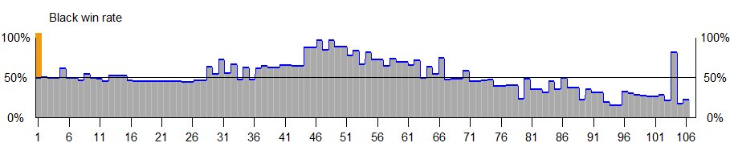
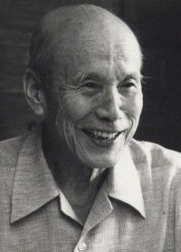
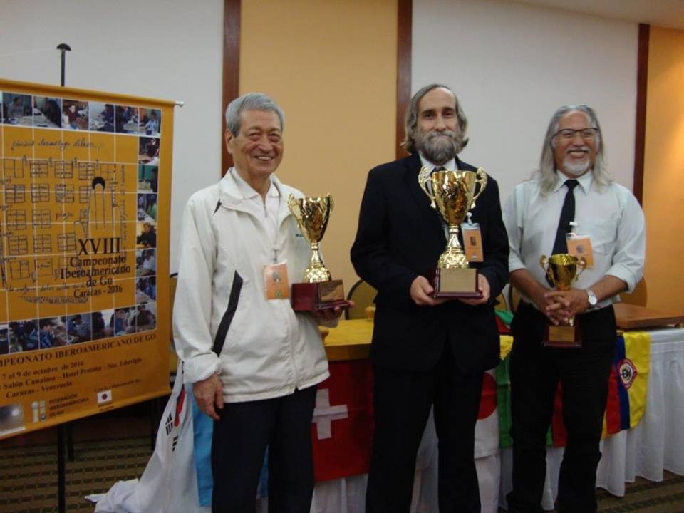

Esta é a terceira — e, muito provavelmente, última — partida
minha da Copa do Brasil 2018 que exibirei no meu site. Meu oponente é
uma montanha, o maior vencedor de campeonatos nacionais do Brasil. Uyama foi aluno
do fundador da Nihon Kiin do Brasil, o falecido profissional e campeão
japonês Iwamoto Kaoru 9p, e ainda é jogador profissional de shogui, uma figura muito peculiar.
Seu estilo é bastante sólido, e seu yose, muito afiado, um oponente
muito difícil de bater.

Gráfico da Porcentagem de Vitória para Pretas na partida (Leela Zero).

Iwamoto Kaoru 9p.

Uyama Hissao (esquerda) e Fernando Aguilar (centro). Aguilar também
foi aluno de Iwamoto Kaoru 9p.
Além do SGF abaixo com a partida, você também pode baixar
aqui o rsgf com a análise da Leela Zero:
Your browser doesn't support the WGo.js Player. Please use a more
modern browser, like Brave, Chrome, Firefox or Edge.